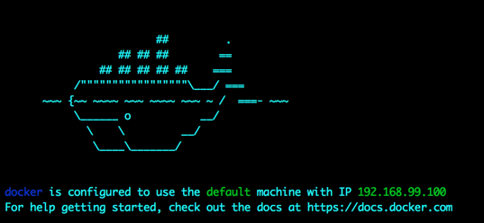
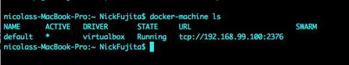
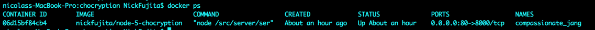
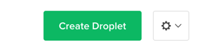
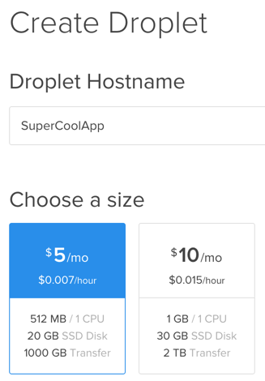
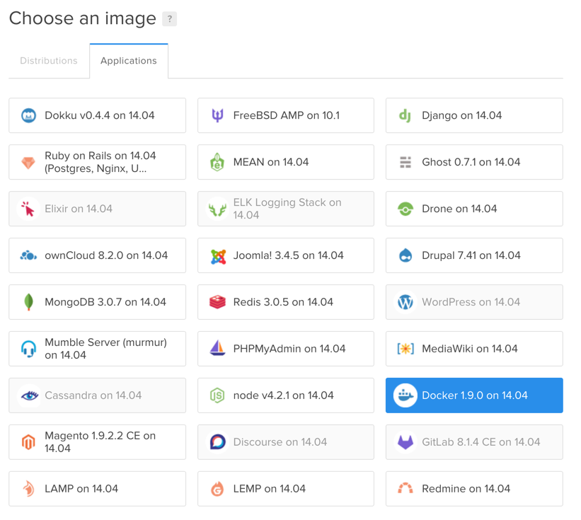
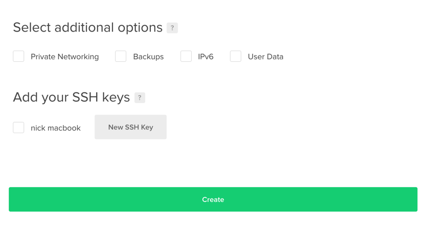
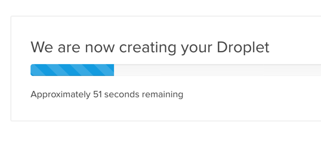
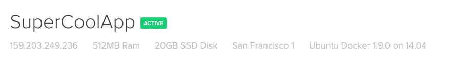

Deploying your node app with Docker
Setting up your Docker image locally
Download/Install Docker Tools
Boot docker machine
- Run Docker Quickstart Terminal
- This will start up a docker-machine (virtual machine) on your local computer
- Once the docker machine is running, you should see the following logo pop up in your console 
Check to see your vm is running
Run command
docker-machine ls
You should have the default virtual machine running.
- This will be the machine that will host your docker containers

Creating a Dockerfile
- Navigate to the folder with your node application in the terminal
- Create a file named Dockerfile in the root directory of your application
- The docker file will contain instructions for docker to create a docker image
# CONTENTS OF DOCKERFILE
# Defining the parent image to use build our image from.
FROM node:5
# bundle app’s source code inside the Docker image
COPY . /src
# move into the src directory where all the source code files live. install all npm dependencies
RUN cd /src; npm install
#map port 8000 to the docker daemon.
#REMEMBER TO CHANGE THIS IF THE PORT IS CHANGED IN server.js
EXPOSE 8000
# define the command line code that will start up the server
CMD ["node", "/src/server/server.js"]
What is a docker image?
- Docker images will contain all of your application code, and installed module dependencies
What is the Dockerfile doing?
- Declaring a base docker image as a starting point
- Bundling your application code into a specified folder
- Installing all npm modules in your package.json file
- Establishing the port inside of your docker image that your code will be running on
- Starting up the node server. In this case, my server starts by running the server.js file
Creating a .dockerignore file
- Similar to a .gitignore file for Github.
- Will not load the files you have listed into your docker image.
# CONTENTS OF .DOCKERIGNORE
node_modules/
bower_components/
*.log
build/
dist/
Building a docker image
- Run command
docker build -t [username]/[image_name]:[tagname] .
- use the same username that you have on docker hub
- are located in your root directory for your web app
- have a period at the end of the command
What's happening?
- Docker is executing the contents of your docker file and creating your new image
- Upon completion, run the command
docker images
- You should see the new image that you created in the list
Running your docker image in a docker container
- Run command
docker run -d -p [externalport]:[internalport] [username]/[image_name]:[tagname]
Command definitions
- external_port
- port that will be used on the docker machine / server to access your docker container
- internal_port *port that you have set your express application to listen on
- username
- your docker hub username
- image_name
- The name of your image
- Can be found in the repository column when running the docker ps command
- tag
- used for versioning of your application
- Can be found in the tag column when running the docker ps command
Run the command
docker ps

You should see your application in a docker container running
If your DO NOT see your application on the list, don’t panic.
- Run the command docker ps -a
- This will show all of the processes that have previously run
- If you see your image in here but not with the command docker ps, it means that either
- The configuration for your docker file may not have set to run your application on boot
- There was an error when attempting to execute your application
Viewing Container Logs
If you need to view the logs for a container at any time, you can execute the command
docker [container_id] logs
These logs have help you to debug why your container is no longer running or is running improperly. It can also help you to confirm that certain operations are running smoothly.
Accessing your Application
Once your container is running, you can access your application in your browser by simply navigating to your server ip address @ the port that you set upon running. eg. 123.456.678.912:80
You can find the ip address of your docker-machine by running the command
docker-machine ls
Make sure that you select the host url, and ignore the port in the URL field and the tcp prefix
Append the port of your application container onto the host ip address
- In this case I set it to 80, so that no additional port needs to be declared
- If everything went well, you should be able to see it in your browser
- If not, check out your docker logs with the command
docker
logs
Publishing docker image to docker hub
Once you have confirmed that your application is running as expected in the docker container on your local machine you are ready to publish your docker image onto docker hub.Run command
docker login
Sign in, if you have not already done so
Run command
docker push [username]/[docker_image_id] : [optional_tagname]
Deploying to server
Digital Ocean
https://www.digitalocean.com/?refcode=80cd687d7427
- Sign up for a free account with $10 credit.
- This will let you host your docker instance for free for at least 2 months, but more like 3 or 4 with average dev usage.
- A credit card is required to sign up, but charges will NOT be made unless you pass the $10 of usage.
- My site has been up for 2 days, and I’ve only been charged $0.02 so far
After signing up, click create a droplet 
Give your app a name, and select the lowest tier to start 
Select the region closest to you

- Select the docker image on the bottom left

- Skip to the bottom, and set your SSH key to your device if you would like.
- Else a password will be sent to you

- Wait for digital ocean to provision your droplet

Once your droplet is created, you can access the console via the console provided on the digital ocean site, or by running an ssh command from your local console
- I would suggest logging in from your console on your local machine
Run the command
ssh root@[server_ip_address]
the server ip address can be found on your droplets dashboard page, directly under the name of your app

Upon first login, you will be prompted to login with the credentials that were provided to you via an email from digital ocean when you spun up your droplet.
Once logged in, you will be prompted to change your root password.
run the commands
docker images
docker ps
Both commands should have showed up as empty, confirming that you have a fresh image with docker running
To pull down your docker image from your docker hub, and get it up and running on your server, run the same command
docker run -d -p 80:8000 [username]/[image_name] : [optional_tag]
after executing docker run, check to see that your image was downloaded, and is currently running in a docker container by executing the command
docker ps
Just like on your local machine, you should see your image running in a container if all went well
If you don't see it, then run
docker ps -a
to confirm that it attempted to run, and
docker logs [container_id]
to view the log and track down the error if one exists
- Once your container is running, you can access your application in your browser by simply navigating to your server ip address @ the port that you set upon running.
- eg. 123.456.678.912:80
- In this case I set it to 80, so that no additional port needs to be declared
For additional documentation, please refer to the following links: ↩
https://www.digitalocean.com/community/tutorials/how-to-create-your-first-digitalocean-droplet-virtual-server ↩